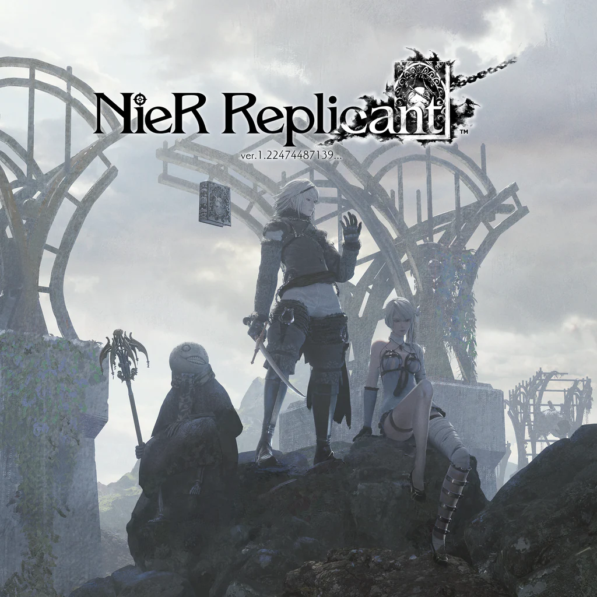

My Workout Playlist
Currently Playing:
METHOD_METAFALICA/.
Hymmnos Concert Side 澪

Blu-bird
NieR Gestalt & Replicant Original Soundtrack
2:41
EXEC_DESPEDIA/.
Hymmnos Concert Side 炎
2:53
 METHOD_METAFALICA/.
Hymmnos Concert Side 澪
4:37
METHOD_METAFALICA/.
Hymmnos Concert Side 澪
4:37
 Song of the Ancients / Atonement
NieR: Automata Original Soundtrack
5:09
Song of the Ancients / Atonement
NieR: Automata Original Soundtrack
5:09
Class::EXSPHERE_NOSURGE
Ar nosurge Genometric Concert
5:09